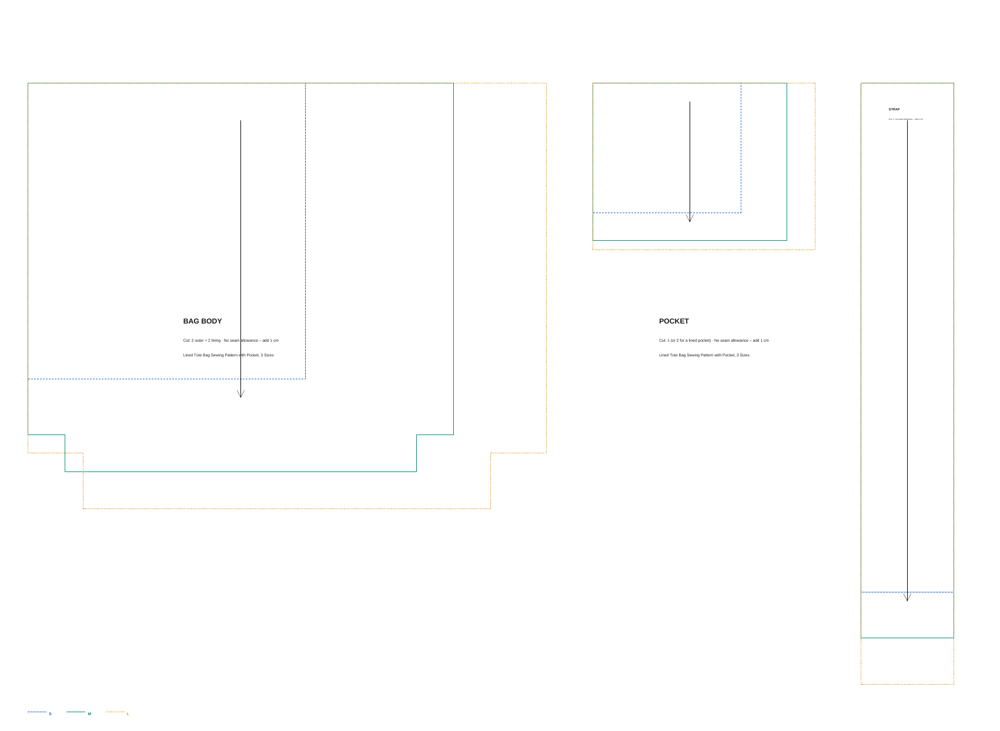

Lined Tote Bag Sewing Pattern with Pocket, 3 Sizes
3 nested sizes · no seam allowance · A4/Letter or A0

Finished sizes
| Size | Width | Height | Base depth | Strap (cut) |
|---|
| S | 30 cm | 32 cm | flat | 10 × 55 cm |
| M | 38 cm | 38 cm | 8 cm | 10 × 60 cm |
| L | 44 cm | 40 cm | 12 cm | 10 × 65 cm |
S is a flat library or kids' bag, M is an everyday tote, L holds groceries or a laptop. Cut each body piece as wide as width + base and as tall as height + half the base.
Before you start
- A fully lined tote with an inside pocket and two shoulder straps. Sizes M and L have boxed corners so the bag stands. Beginner friendly, about 2 hours.
- No seam allowance included: add 1 cm (3/8 in) on all edges.
- Outer fabric: canvas, denim, heavy cotton or linen. Lining: quilting cotton.
Printing
- Print at 100% / actual size and check the test square on page A1.
- All pieces are rectangles, so you can also draw them straight onto the fabric with the measurements in the table.
You will need
- Outer fabric: 0.5 m (S), 0.7 m (M), 0.8 m (L) of 140 cm wide fabric (straps included)
- Lining: 0.4 m (S), 0.5 m (M), 0.6 m (L)
- Optional: medium fusible interfacing for the outer fabric
Sewing steps
- Fold each strap lengthwise into quarters (to 2.5 cm), press and topstitch both long edges.
- Hem the top of the pocket, press the other edges under 1 cm and sew it to one lining piece, 8 cm below the top edge.
- Sew the two outer pieces right sides together along the sides and the bottom. Do the same with the lining, leaving a 12 cm gap in the bottom seam.
- Boxed corners (M, L): pull each cut-out corner open so the side seam lies on the bottom seam and sew straight across.
- Turn the outer bag right side out. Pin the straps to the top edge, 8 cm from each side seam (S: 6 cm), loops hanging down.
- Slip the outer bag into the lining, right sides together, and sew around the top edge.
- Turn through the gap, close the gap, push the lining in and topstitch around the top 0.5 cm from the edge.
Make it yours
- Add a magnetic snap or a zip pocket.
- Use a contrast fabric for the base (cut the bottom 10 cm separately).
- Sew a set of three sizes as a gift.
© AureliaVenn · Personal use and small-batch handmade sales. Please don't share or resell the pattern files. Drafted with the help of software.